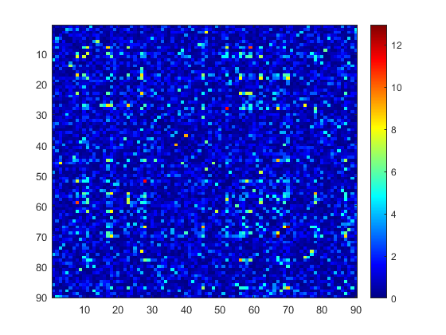
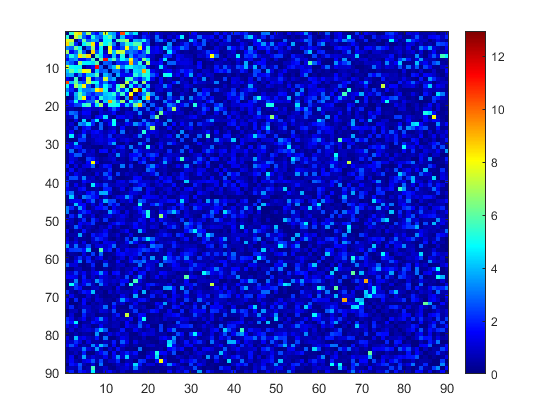

Contents
Generate a test graph
Define two adjacency matrices
Z90_2 = eye(90); Z90_1 = Z90_2; % Set the size of the cluster cluster_size = 20; % Add a cluster to the adjacency matrix Z90_1(1:cluster_size, 1:cluster_size) = ones(cluster_size); % Compute the difference between the two matrices diff_matrix = Z90_1 - Z90_2; % Get the indices of the non-zero and zero entries in the difference matrix a1 = find(squareform(diff_matrix) == 1); a0 = find(squareform(diff_matrix) == 0); % Generate a random weight matrix with higher weights for the cluster edges Wt = zeros(4005, 30); Wt(a0,:) = sqrt(5) * randn(4005 - (cluster_size^2 - cluster_size) / 2, 30); Wt(a1,:) = sqrt(5) * randn((cluster_size^2 - cluster_size) / 2, 30) + 1; % Generate another random weight matrix Wt2 = randn(4005, 30); % Perform a t-test between the two weight matrices to obtain a p-value matrix [h1, p1] = ttest(Wt', Wt2'); % Transform the p-value matrix into a weighted adjacency matrix ar = randperm(90); W1 = squareform(-log(p1)); W1 = W1(ar, ar); nlogp = squareform(W1);
Subnetwork detection
Visualize the weighted adjacency matrix
figure; imagesc(W1); colorbar; colormap("jet"); snapnow % Perform parameter tuning to find the optimal cut and lambda values [lambda_out, cut_out] = param_tuning(W1); % Perform SICERS clustering using the optimal cut and lambda values [CIDA, W_SICERS, Clist] = SICERS_final(W1, cut_out, lambda_out, 20); % Visualize the SICERS clustering results figure; imagesc(W_SICERS); colorbar; colormap("jet"); snapnow 